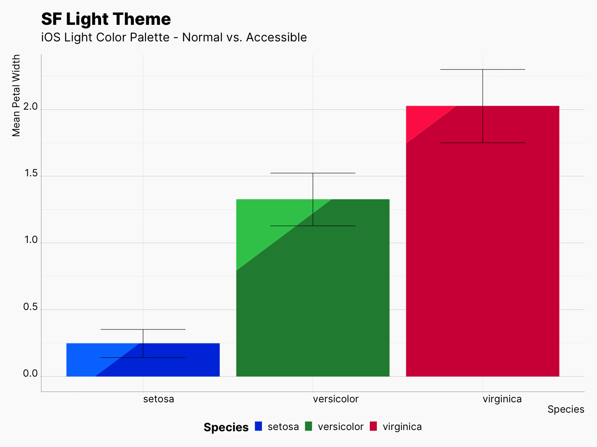
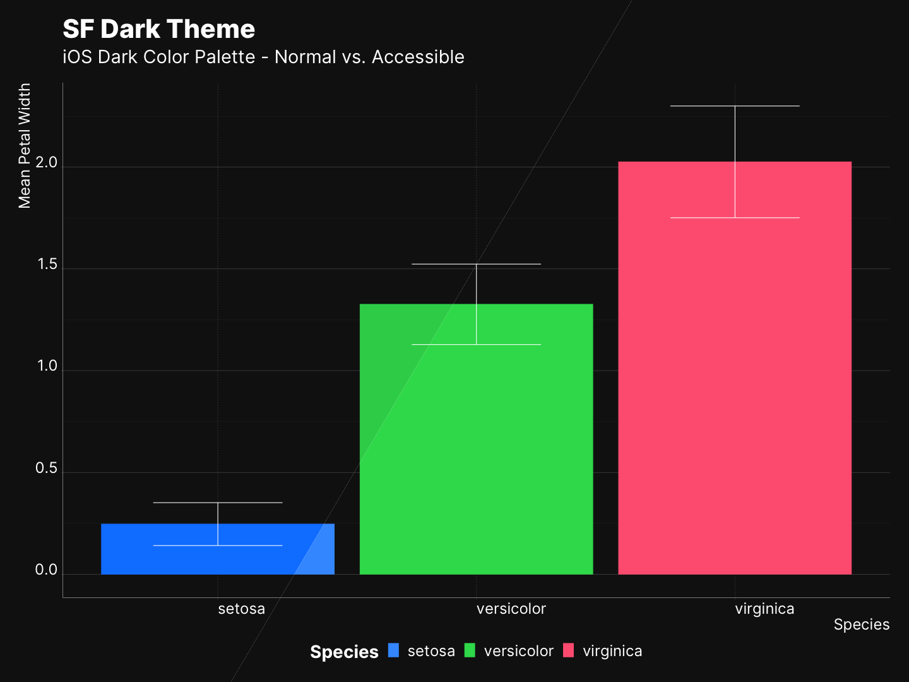

sfthemes is a pair of ggplot2 themes, theme_sf_light(), theme_sf_dark(), and a collection of color scales based on Apple’s Human Interface Guidelines. Themes are inspired by the occasional appearances of charts used by Apple within different contexts, e.g., Apple Health app, Screen Time on iOS and macOS. And colors are adapted from iOS, macOS, and watchOS system colors. Each color scale has a light and dark variant as well that compliments the light/dark themes, scale_colour_ios_light() and scale_colour_ios_dark() respectively.
When bond together, sfthemes offers a unique opportunity to generate two version of your plot, i.e., light/dark, with two similar but individually optimized color scales for each variant of your plot.
In addition, sfthemes uses dynamic type sizing in order to provide a consistent and elegant overall resizing and re-scaling of plot elements. Read more here.
Install
Install the development version from GitHub
install.packages("devtools"); library(devtools)
devtools::install_github("amirmasoudabdol/sfthemes")Install from CRAN [Not available yet!]
install.packages("sfthemes")Preparation / Usage
You can load and configure sfthemes using the following commands. If you do not get any errors or warnings, sfthemes is fully configured and can access the required fonts.
library(ggplot2); library(sfthemes)
# You only need to run these commands once!
import_inter()
import_sf_pro()Quick Start
sfthemes offers two base themes, theme_sf_light() and theme_sf_dark(). The Light theme uses an off-white background, #fafafa, and a range of black colors for text. In contrast, the dark theme uses an off-black background, #141414, and a range of white colors for text. In addition to themes, sfthemes provides a set of scale_colour/fill_* objects based on various available color palettes in Apple’s HIG. Each color palette has a light and a dark variant, as well as accessible form of those. Accessible color palettes are adjusted to have higher contrast and less brightness. List of all available color palettes can be found here.
Light and Dark Themes
In general, we recommend pairing light scales with theme_sf_light and dark scales with theme_sf_dark theme. Here we use scale_colour_ios_light(), and scale_colour_ios_dark() to recreate the figure above.
# TODO: Update the code when the plot is finalized |
 |
Accessible Colors
Each color palette is accompanied with an accessible variant of itself. In order to access the accessible color palettes, we use accessible as follow:
# TODO: Update the code when the plot is finalized|  |  |
The Colors article elaborates on the availability, differences, and features of each system color palette.
Scaling
sfthemes provides 7 scaling factor. Scaling factors can be applied to text, elements, or both. Figure below is generated from combination of light/dark plots in all available scaling factors. Notice that that all elements are resizing at the same time.
# TODO: Update the code when the plot is finalized
The Scales article elaborates on the dynamic type sizing.